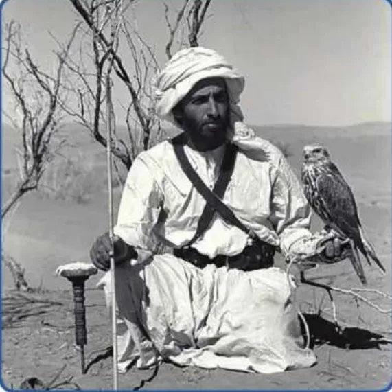

بِطاقَةُ الْمَصادِرِ وَالْمَفاهيمِ: الْباني الْمُؤَسِّسُ
الدِّراساتُ الِاجْتِماعِيَّةُ · الصَّفُّ الثّالِثُ · ص 74–80
لِلْجَميعِ

وُلِدَ الشَّيْخُ زايِدُ بْنُ سُلْطانَ آلِ نَهْيانَ - رَحِمَهُ اللهُ - في أَبوظَبي عامَ 1918م، والِدُهُ الشَّيْخُ سُلْطانُ وَوالِدَتُهُ الشَّيْخَةُ سَلامَةُ بِنْتُ بُطي، وَنَشَأَ في الْعَيْنِ وَبَدَأَ التَّعْليمَ في الْخامِسَةِ فَدَرَسَ الْقُرْآنَ وَالْحَديثَ وَاللُّغَةَ الْعَرَبِيَّةَ، وَأَحَبَّ الشِّعْرَ وَالْفُروسِيَّةَ وَسِباقَ الْهُجُنِ وَالْقَنْصَ بِالصُّقورِ الَّذي يُعَلِّمُ الصَّبْرَ.📖 أَقْرَأُ النَّصَّ
وُلِدَ الشَّيْخُ زايِدُ بْنُ سُلْطانَ آلِ نَهْيانَ - رَحِمَهُ اللهُ - في أَبوظَبي عامَ 1918م. والِدُهُ الشَّيْخُ سُلْطانُ بْنُ زايِدِ بْنِ خَليفَةَ آلِ نَهْيانَ - رَحِمَهُ اللهُ -، وَأُمُّهُ الشَّيْخَةُ سَلامَةُ بِنْتُ بُطي بْنِ خادِمٍ - رَحِمَها اللهُ -، وَقَدْ سُمِّيَ عَلى اسْمِ جَدِّهِ الشَّيْخِ زايِدٍ - رَحِمَهُ اللهُ -، وَهُوَ الِابْنُ الْأَصْغَرُ بَيْنَ أَرْبَعَةِ إِخْوَةٍ. نَشَأَ الشَّيْخُ زايِدٌ - رَحِمَهُ اللهُ - بَعْدَ رَحيلِ والِدِهِ في الْعَيْنِ، حَيْثُ تَلَقّى فيها عُلومَهُ وَمَعارِفَهُ الَّتي تَرَكَتْ بَصَماتٍ واضِحَةً عَلى حَياتِهِ وَشَخْصِيَّتِهِ، وَغَرَسَتِ الْقِيَمَ التَّقْليدِيَّةَ في نَفْسِهِ. بَدَأَ رِحْلَةَ التَّعْليمِ في الْخامِسَةِ مِنْ عُمُرِهِ، وَدَرَسَ الْقُرْآنَ الْكَريمَ وَالْحَديثَ الشَّريفَ وَأُصولَ الدّينِ وَاللُّغَةَ الْعَرَبِيَّةَ. أَحَبَّ الشَّيْخُ زايِدٌ - رَحِمَهُ اللهُ - الشِّعْرَ، وَرِياضَةَ الْفُروسِيَّةِ وَسِباقَ الْهُجُنِ، وَحَرَصَ عَلى مُمارَسَةِ هِواياتِهِ الْمُحَبَّبَةِ في أَوْقاتِ الْفَراغِ الْقَليلَةِ، وَكانَ يَرى في هٰذِهِ الرِّياضَةِ تُراثًا شَعْبِيًّا يَجِبُ الْمُحافَظَةُ عَلَيْهِ. كَما أَحَبَّ الشَّيْخُ زايِدٌ رِياضَةَ الْقَنْصِ بِالصُّقورِ؛ لِأَنَّها تُعَلِّمُ الصَّبْرَ وَالْقُدْرَةَ عَلى تَحَمُّلِ الصِّعابِ. كانَ الشَّيْخُ زايِدُ بْنُ سُلْطانَ آلِ نَهْيانَ - رَحِمَهُ اللهُ - ابْنَ بيئَتِهِ. وَمِنْ أَقْوالِهِ: «عَلى شَعْبِنا أَلّا يَنْسى ماضِيَهُ وَأَسْلافَهُ… وَكُلَّما أَحَسَّ النّاسُ بِماضيهِمْ أَكْثَرَ، وَعَرَفوا تُراثَهُمْ، أَصْبَحوا أَكْثَرَ اهْتِمامًا بِبِلادِهِمْ».
كِتابي ص 74–80
📘 كَلِماتي
الْفُروسِيَّةُ
رُكوبُ الْخَيْلِ 🐎
صَيْدُ الصُّقورِ
الْقَنْصُ 🦅
الْعَيْنُ
مَدينَةُ نَشْأَتِهِ 🏔️
جَبَلُ حَفيتٍ
في الْعَيْنِ ⛰️
💡 تَعَلَّمْتُ
📅وُلِدَ في أَبوظَبي عامَ 1918م.
🏔️نَشَأَ في مَدينَةِ الْعَيْنِ.
📖بَدَأَ التَّعْليمَ في الْخامِسَةِ.
🐎أَحَبَّ الْفُروسِيَّةَ وَسِباقَ الْهُجُنِ.
✅ أُطَبِّقُ
☐أُصَمِّمُ بِطاقَةَ زايِدٍ الصَّغيرِ.
☐أُكْمِلُ كِتابي ص 76–80.
🏅 ⭐ أَحْسَنْتَ